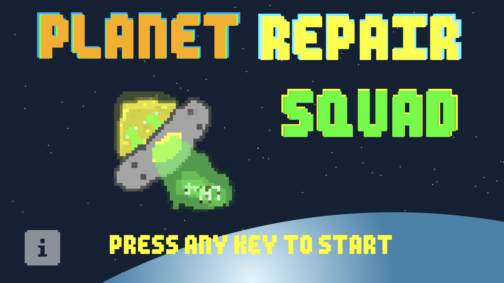

<div class="lightbox-wrapper">
    <div class="container">
        <div class="lightbox-close">
            <div class="close-btn" data-modal-close=""><span class="btn-line"></span></div>
          </div>
    <div class="row">
      <div class="col-12">
        <div class="section-heading page-heading">
          <p class="section-description">Planet Repair Squad</p>
          <h2 class="section-title">Global Game Jam 2020</h2>
          <div class="animated-bar"></div>
        </div>
      </div>
    </div>
  <div class="row">
    <div class="col-md-6 col-sm-12 col-xs-12">
      <div class="card single-post"><span class="content-date">31 January - 02 February , 2020</span>
        <div class="card-body post-content"><a href="#0">
            <h5 class="card-title content-title">Global Game Jam 2020</h5>
          </a>
          <p class="card-text content-description">L'événement Global Game Jam est l'un des derniers défis auxquels j'ai
            participé. Il a été d'une très grande importance dans mon parcours et ce pour plusieurs raisons:</p>
        </div>
      </div>
    </div>
  </div>
  </div>
</div>
